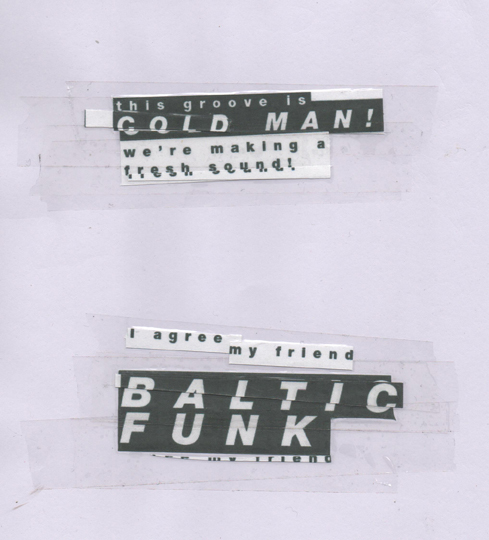

Week 9
This week I've continued to look into the pinch-zoom function. I didn't have the success
I hoped for with Pinch-ZoomJS. Rather than sticking with it I panicked and started looking for
other JS libraries that could help me implement the pinch-zoom function I'm after.
I looked at HammerJS and ZoomJS. Again I panicked and swerved away from HammerJS
when it wasn't going my way and moved on to ZoomJS. ZoomJS seemed to work, but was perhaps
the most inferior of the three libraries I've looked at. After a discussion with my tutor it was decided that
I should persevere with PinchZoomJS, after all, if people before me have made it work, then
there's no reason why I can't.
UI Frameworks
This week I've also started looking into UI frameworks to help me put together the UI elements of
the project. I've been told that
Bootstrap has a good grid system, which will come in handy
to make elements fully responsive. Whilst exploring
Bootstrap I thought it would be a good idea
to piece together some storyboards. This also led me to look at the typography for the interactive
story (see above 'this groove is cold man!'). This was achieved by cutting up printed out lettering then sticking
back together with sticky tape, before scanning in. Then the imagery was adjusted in Photoshop before
being made into a vector in Illustrator before being saved as SVG.
